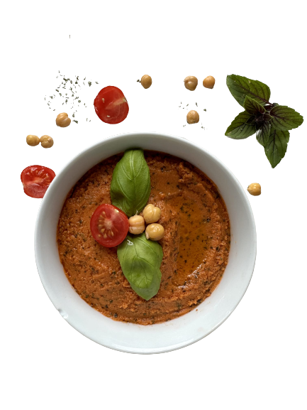

Hummazing – Handmade Hummus
Tomate- Basilikum
Tauche ein in die erfrischende Faszination des Tomate-Basilikum Hummuspulver - Mediterraner Genuss im Handumdrehen!
Sonnengereifte Tomaten und würziges Basilikum entfalten sich auf deinem Teller, sobald du Wasser und Öl hinzufügst. Ob zuhause oder unterwegs – Hummazing begleitet dich immer!
Einfach und schnell zubereitet: Wasser und Öl zugeben, umrühren – und der Geschmack des Mittelmeers erwartet dich. Perfekt portioniert, ideal für Singles.
Aber auch für Outdoorsportler: Kompakt verpackt, bereit in Sekunden. Beim Wandern, Radfahren oder Campen – hol dir mediterranen Flair, wann immer du möchtest.
Entdecke jetzt Hummazing's Tomate-Basilikum Hummuspulver und erlebe mühelosen mediterranen Genuss – überall und jederzeit!